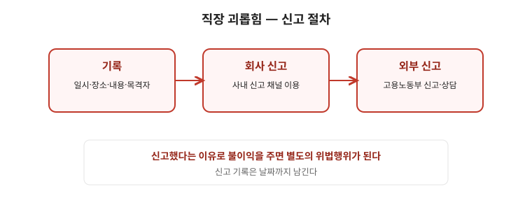

직장 내 성희롱은 상대가 원하지 않았는지와 업무 관계에서 비롯됐는지를 중심으로 판단됩니다. “의도가 아니었다”는 항변은 기준이 아닙니다. 이 글은 범위·사업주 의무·당사자 대응·증거 보관까지 순서대로 정리한 안내입니다. 사안 특성상 상담·수사 절차가 개입되는 경우가 많으므로 마지막 점검표까지 읽고 괴롭힘 글·신뢰할 수 있는 상담 창구와 함께 대응하세요.

한눈에 보는 표
| 구분 | 기준 | 기록할 것 |
|---|---|---|
| 성립 | 업무 관련성 + 상대가 원하지 않은 성적 언동 | 일시·장소·발언·목격자, 거부의사 표시 기록 |
| 사업주 의무 | 예방교육·고충처리·조사·피해자 보호·불이익 금지 | 신고일·조사 경과·조치 통보 보관 |
| 대응 경로 | 사내 → 노동청·사외 상담 → 수사 | 원본 별도 저장, 2차 피해 기록 |
1. 범위를 어디까지 보나
- 말·행동·게시물 등 형태를 가리지 않습니다. 업무 관련 모임이나 온라인 소통도 직장 내 행위로 취급될 수 있습니다.
- 회사가 문제를 알았는데 방치하면 고용상 불이익과 함께 별도 문제가 됩니다. “알았다”는 시점을 기록하는 것이 중요합니다.
- 괴롭힘과 겹치는 경우가 많습니다. 관련 글 괴롭힘 글·신고 절차 글과 함께 보세요.
2. 사업주의 의무 — 교육·조사·보호
- 예방 교육, 고충 상담, 조사와 피해자 보호 조치가 요구됩니다. 신고 접수와 조사 절차를 문서로 정해 두는 것이 회사 의무의 일부입니다.
- 신고·진술을 이유로 불이익을 주는 것은 금지됩니다. 신고 전후의 인사·평가 변화를 시점별로 기록하세요.
3. 당사자가 할 수 있는 일 — 거부·분리·문서요청
- 일시·장소·발언·목격자를 남기고, 반복되는 경우 즉시 거부 의사를 명확히 표시하세요. 거부 기록 자체가 이후 절차의 근거가 됩니다.
- 가해자와 직접 협의를 요구받는 상황을 피하세요. 조사 절차와 피해자 보호 조치(분리·휴가 등)를 문서로 요청하세요.
- 필요하면 사외 상담 기관, 노동청, 수사기관을 함께 검토하세요. 사내 절차만으로 해결되지 않는 경우가 있습니다.
4. 증거와 유의점 — 원본을 살려라
- 삭제된 메신저는 복구가 어렵습니다. 받은 즉시 별도 저장(캡처+원본 보관)하세요. 관련 글 증거 점검표 양식을 쓰세요.
- 진정·고소 과정에서 2차 피해가 생기지 않도록 신뢰할 수 있는 창구를 정해 두는 것이 중요합니다. 혼자 대응하지 마세요.
자주 틀리는 3가지
- “장난이면 괜찮다” — 상대가 원하지 않았는지가 기준입니다.
- “회식 자리는 직장 밖” — 업무 관련성이 있으면 직장 내 행위로 볼 수 있습니다.
- “증거 없이 말로 하면 된다” — 일시·발언·목격자 기록이 조사에서 결정적입니다.
현장 체크리스트
- □ 일시·장소·발언·목격자를 기록했는가
- □ 거부의사를 표시하고 기록했는가
- □ 원본을 별도 저장했는가
- □ 신고·조사 경과를 문서로 남겼는가
- □ 신뢰할 창구(노조·상담기관)를 정했는가
자주 묻는 질문
- Q. 한 번만 있었는데 신고되나요? — A. 성적 언동의 수위·맥락에 따라 한 번도 문제될 수 있습니다. 기록하고 상담하세요.
- Q. 카톡을 지웠습니다. — A. 남은 기록(통화·목격·정황)을 모으세요. 이후 자료는 즉시 별도 저장하세요.
- Q. 회사가 합의를 종용합니다. — A. 서명 전 상담이 필요합니다. 합의 내용은 문서로 확정하세요.
- Q. 신고 후 불이익이 걱정됩니다. — A. 불이익 금지가 법으로 정해져 있습니다. 전후 기록을 모아 두세요.
근거와 원문
이 글은 2026-09-19 기준 일반 안내입니다. 사안의 성격상 상담·수사 절차가 개입되는 경우가 많으므로, 노조·여성위원회·관련 상담 기관과 함께 대응하세요. 법률 자문이 아닙니다.